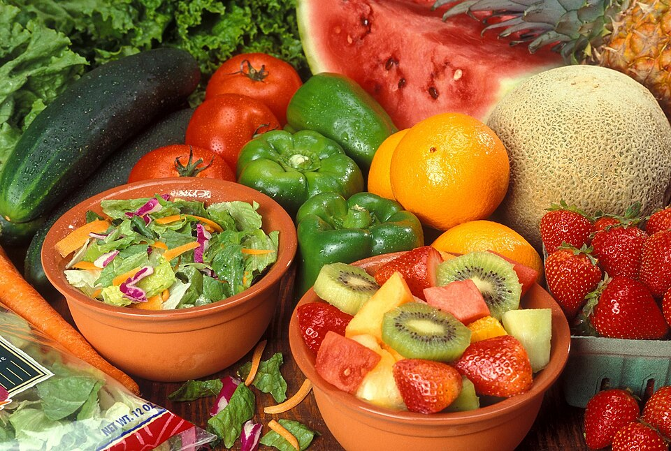

5 hábitos para una alimentación más saludable
Adoptar una alimentación más saludable no significa hacer cambios drásticos de la noche a la mañana. Se trata de incorporar, poco a poco, hábitos simples que con el tiempo se convierten en parte natural de tu rutina. Aquí te compartimos cinco recomendaciones fáciles de aplicar.
1. Prioriza los productos de temporada
Las frutas y verduras de temporada suelen tener mejor sabor, mayor valor nutricional y un precio más accesible. Además, al comprar productos locales apoyas directamente a los agricultores de tu país.
2. Aumenta el consumo de verduras en cada comida
Intenta que al menos la mitad de tu plato esté compuesto por verduras frescas, como espinacas, zanahorias o pimientos. Son una excelente fuente de vitaminas, minerales y fibra.
3. Elige snacks naturales
Reemplaza los snacks ultraprocesados por opciones naturales como manzanas, plátanos o frutos secos. Son prácticos, nutritivos y fáciles de llevar a cualquier lugar.
4. Hidrátate de forma consciente
El agua debe ser tu principal fuente de hidratación. Puedes darle un toque natural agregando rodajas de naranja o unas hojas de menta.
5. Cocina en casa con ingredientes frescos
Preparar tus propias comidas te permite controlar la calidad de los ingredientes y reducir el consumo de conservantes y azúcares añadidos. Anímate a probar nuevas recetas con productos orgánicos.
En HuertoHogar contamos con una amplia selección de frutas, verduras y productos orgánicos para que puedas comenzar a aplicar estos hábitos desde hoy. Explora nuestro catálogo aquí.